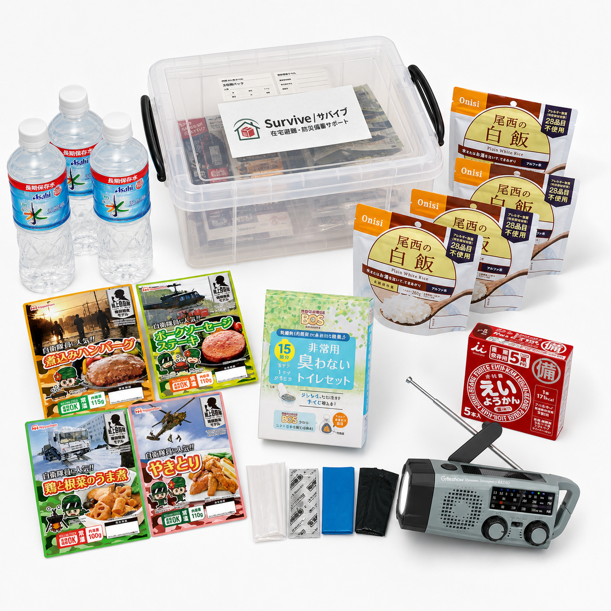
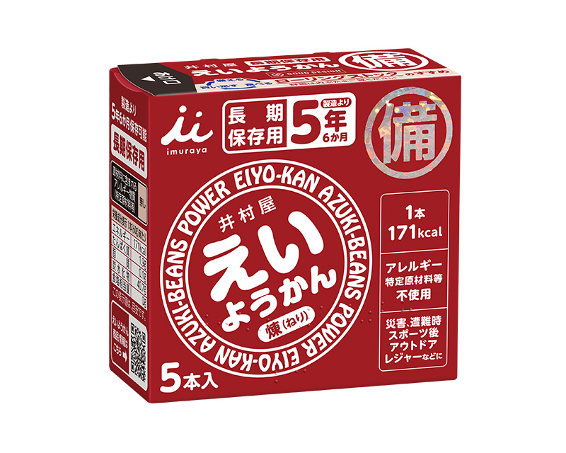
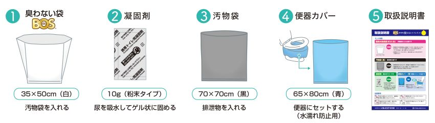

飲む
1人3日分、9Lの長期保存水。
 Survive サバイブ無料診断
Survive サバイブ無料診断飯能市・日高市・入間市周辺
水・食料・非常用トイレ。置き場所と期限管理まで、ご家庭に合わせて整えます。
3分・無料。聞き取りと見積まで無料です。
初回10世帯 1人 19,800円〜税込目安

最初の72時間を、家で過ごすために
1人3日分、9Lの長期保存水。
主食と、すぐ口にできる甘いもの。
断水時にも困らない非常用トイレ。
長期保存水 500mL × 18本
白飯・戦闘食糧モデル
えいようかん
非常用臭わないトイレセット
下記は基本構成です。すでにお持ちの備蓄は確認して活かし、追加が必要なものだけをご案内します。
納品時には、置き場所の相談と設置、期限一覧の作成まで行います。
主な商品の写真


商品画像：各メーカー公式サイトより。仕様・パッケージは調達時期により変更となる場合があります。
購入から5年間の備え
災害になってから探すのではなく、必要なものを、今の家に置いておく。
19,800円 ÷ 1,825日 = 約11円
1人分・税込目安／3日間パック初回10世帯の価格
税込目安。備蓄品・聞き取り・訪問設置・期限管理を含みます。追加水・衛生用品は必要な分だけ見積します。
ご利用の流れ
人数、今ある備蓄、置き場所の悩みを送ってください。
必要なものだけを整理してお伝えします。
日程を調整して伺い、置き場所まで整えます。
期限一覧をお渡しし、補充時期にご連絡します。
よくある質問
頼めます。今あるものを確認して活かし、足りない分だけを見積します。
玄関収納、廊下収納、押し入れ、階段下など、続けて置ける場所を一緒に決めます。
ありません。聞き取りと見積までは無料です。ご自宅で検討してからお決めください。
飯能市を中心に、日高市・入間市周辺に対応しています。地域外も、対応できるか正直にお伝えします。